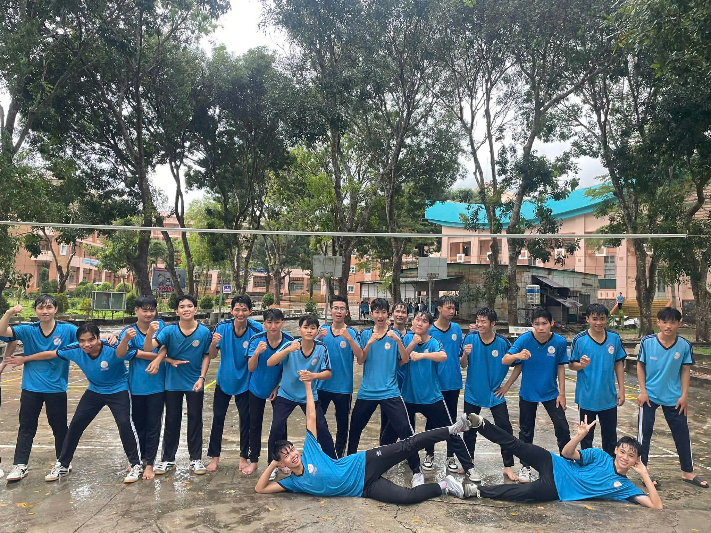

Lớp 12B2 là một tập thể gồm 45 học sinh đoàn kết, năng động và giàu tinh thần học tập. Trong suốt những năm học, lớp luôn cố gắng phấn đấu không chỉ trong học tập mà còn trong các hoạt động phong trào của trường.
Đồng hành cùng lớp là thầy Nguyễn Đức Bảng, giáo viên giảng dạy môn Vật lý. Thầy không chỉ truyền đạt kiến thức một cách dễ hiểu, sinh động mà còn luôn quan tâm, hỗ trợ học sinh trong cả học tập lẫn cuộc sống. Nhờ sự tận tâm của thầy, lớp 12B2 ngày càng trưởng thành và gắn bó hơn
Tập thể lớp 12B2 luôn hướng tới mục tiêu học tốt – sống đẹp và cùng nhau tạo nên những kỷ niệm đáng nhớ trong quãng đời học sinh.

nhiệt huyết tuổi trẻ
Thông Tin Về Giáo Viên Chủ Nhiệm
thầy Nguyễn Đức Bảng – giáo viên chủ nhiệm, đồng thời giảng dạy môn Vật lý. Thầy không chỉ truyền đạt kiến thức một cách dễ hiểu, sinh động mà còn luôn quan tâm, lắng nghe và hỗ trợ học sinh trong cả học tập lẫn cuộc sống. Nhờ sự tận tâm và trách nhiệm của thầy, tập thể 12B2 ngày càng trưởng thành, gắn bó và tiến bộ hơn từng ngày. Với mục tiêu học tốt – sống đẹp, lớp 12B2 luôn cố gắng hết mình để tạo nên những kỷ niệm đáng nhớ trong quãng đời học sinh.